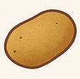

HOME
Creamy Mashed Potatoes with Peanut-MALK Sauce

Ingredients
- 2 potatoes, peeled and chopped
- ¼ cup MALK (e.g., almond or oat)
- 2 tbsp natural peanut butter
- Salt and pepper to taste
Steps:
- Boil potatoes until soft. Mash them with a splash of MALK.
- In a pan, warm MALK and whisk in peanut butter until smooth.
- Pour sauce over the mashed potatoes. Season and serve.